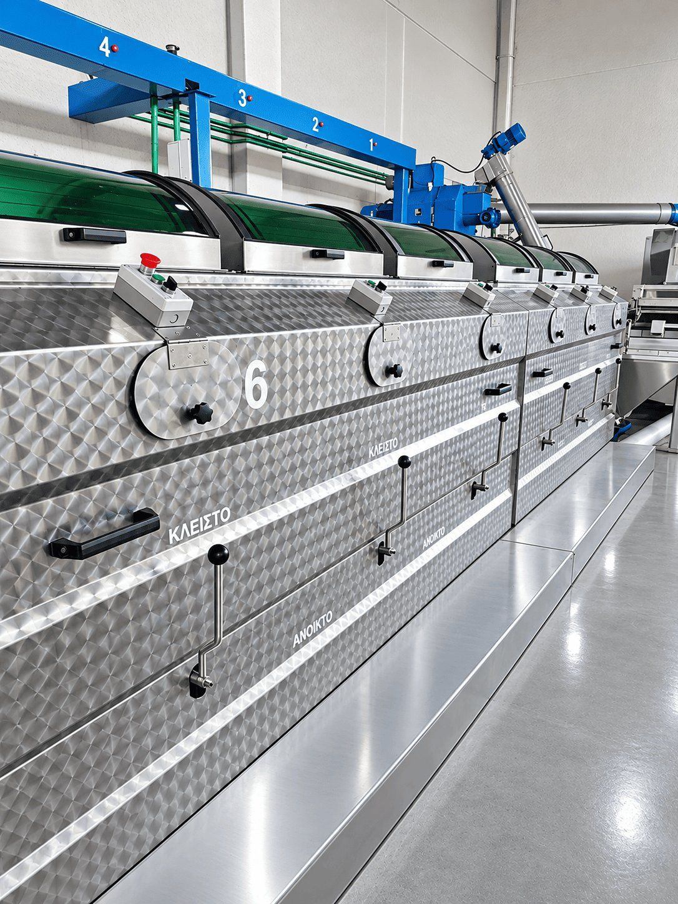

Το ελαιοτριβείο σήμερα
Σύγχρονη γραμμή συνεχούς ροής από ανοξείδωτο χάλυβα, ρυθμισμένη για ένα πράγμα: να βγαίνει το λάδι από τον καρπό χωρίς να χάνει τίποτα από τα καλά του.
Εξοπλισμός και τρόπος δουλειάς
- Γραμμή επεξεργασίας Pieralisi με φυγοκεντρικό διαχωριστή (ντεκάντερ)
- Ανοξείδωτος χάλυβας στη γραμμή και στις δεξαμενές
- Έλεγχος θερμοκρασίας στη μάλαξη, κάτω από 27°C
- Κλειστοί διαχωριστές και δεξαμενές με έκπλυση αζώτου
- Χωριστή επεξεργασία κάθε παρτίδας, χωρίς ανάμειξη
- Εργαστηριακή ανάλυση για κάθε παρτίδα

Από την ελιά στο λάδι σας
Έτσι περνά ο καρπός σας από τη γραμμή μας. Κάθε παρτίδα κάνει τη διαδρομή μόνη της.
-
Παραλαβή και ζύγιση
Ζυγίζουμε τον καρπό σας και τον κρατάμε χωριστά από τις άλλες παρτίδες.
-
Αποφύλλωση και πλύσιμο
Φεύγουν φύλλα, κλαδάκια και χώμα, για να μην περάσουν ξένες γεύσεις στο λάδι.
-
Άλεση
Ο καθαρός καρπός σπάει και γίνεται ελαιοπολτός.
-
Μάλαξη
< 27°CΟ πολτός ανακατεύεται αργά σε ελεγχόμενη θερμοκρασία, ώστε να κρατήσει τα αρώματά του.
-
Φυγοκέντρηση
Ο ανοξείδωτος φυγοκεντρικός διαχωριστής χωρίζει το λάδι από το νερό και τα στερεά του καρπού.
-
Το λάδι σας
Το παίρνετε στα δοχεία σας ή το αφήνετε στις δεξαμενές μας, μαζί με την ανάλυσή του.
Ψυχρή εκχύλιση: στους ευρωπαϊκούς κανόνες εμπορίας ελαιολάδου, η ένδειξη αφορά λάδι που παράγεται κάτω από 27°C με φυγοκέντρηση του ελαιοπολτού. Έτσι δουλεύει η γραμμή μας.
Από την παλιά γραμμή στη σημερινή
Από το 1963 ο εξοπλισμός έχει αλλάξει, όπως δείχνουν οι φωτογραφίες του αρχείου. Η ανανέωση συνεχίζεται: επενδύουμε σε τεχνολογία που επεξεργάζεται τον καρπό αποδοτικά και σέβεται τη φυσική αξία του λαδιού.

Η σεζόν τρέχει. Κλείστε τη σειρά σας με ένα τηλεφώνημα.